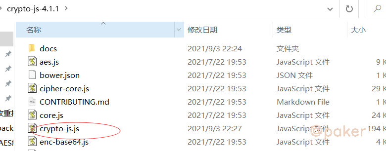

四库一平台AES解密&crypto-js的使用
crypto-js是个很流行的js加密算法库，以四库一平台的响应数据AES解密为例，记录下crypto-js的使用
目标网址
aHR0cDovL2p6c2MubW9odXJkLmdvdi5jbi9zdXBlcnZpc2UvbGlzdA==
1.定位解密位置
首先看下接口返回的数据，一串密文
95780ba0943730051dccb5fe3918f9fe4c6612ab。。。
没办法通过全局搜索的方式定位，那么先下个xhr断点 api/webApi/artcleApi/getPageList
按照正常的逻辑分析，接口响应的密文数据肯定会被前端js再处理解密，最终渲染到网页上显示出正常数据
随便找了一段正向开发的js请求代码，先学习一下：
XMLHttpRequest.onreadystatechange = callback；当 readyState 的值改变的时候，callback 函数会被调用。
var xhr= new XMLHttpRequest(),
method = "GET",
url = "https://developer.mozilla.org/";
xhr.open(method, url, true);
xhr.onreadystatechange = function () {
if(xhr.readyState === XMLHttpRequest.DONE && xhr.status === 200) {
console.log(xhr.responseText) //打印响应内容
}
}
xhr.send();
按照这个思路，我们在xhr断点断住的时候去寻找 onreadystatechange
d.onreadystatechange = function() {
if (d && 4 === d.readyState && (0 !== d.status
跟进，最终定位到解密函数的位置
function h(t) {
var e = d.a.enc.Hex.parse(t)
, n = d.a.enc.Base64.stringify(e)
, a = d.a.AES.decrypt(n, f, {
采用AES解密，可以用python实现，或者使用今天推荐的crypto-js这个js加密算法库
2.crypto-js的使用
crypto-js，github地址：https://github.com/brix/crypto-js
方式一、npm安装
npm install crypto-js
典型API调用签名用例的ES6导入：
import sha256 from 'crypto-js/sha256';
import hmacSHA512 from 'crypto-js/hmac-sha512';
import Base64 from 'crypto-js/enc-base64';
const message, nonce, path, privateKey; // ...
const hashDigest = sha256(nonce + message);
const hmacDigest = Base64.stringify(hmacSHA512(path + hashDigest, privateKey));
模块化包括：
var AES = require("crypto-js/aes");
var SHA256 = require("crypto-js/sha256");
...
console.log(SHA256("Message"));
包括所有库，用于访问其他方法：(就是全部加密算法一起引入)
var CryptoJS = require("crypto-js");
console.log(CryptoJS.HmacSHA1("Message", "Key"));
方式二、直接导出文件使用
在官方项目地址里，下载：https://github.com/brix/crypto-js/releases

把crypto-js.js，稍作修改(就是把原代码的头部稍微修改了下)，就可以直接使用了，代码如下
var CryptoJS = new CryptoJS();
function CryptoJS(){
/*globals window, global, require*/
/**
* CryptoJS core components.
*/
var CryptoJS = CryptoJS || (function (Math, undefined) {
省略。。。
省略。。。
省略。。。
C.RabbitLegacy = StreamCipher._createHelper(RabbitLegacy);
}());
return CryptoJS;
};
3.web端解密实现
function mainfunc(t) {
var f = CryptoJS.enc.Utf8.parse("jo8j9wGw%6H***");
var m = CryptoJS.enc.Utf8.parse("0123456789****");
var e = CryptoJS.enc.Hex.parse(t)
, n = CryptoJS.enc.Base64.stringify(e)
, a = CryptoJS.AES.decrypt(n, f, {
iv: m,
mode: CryptoJS.mode.CBC,
padding: CryptoJS.pad.Pkcs7
})
, r = a.toString(CryptoJS.enc.Utf8);
return r.toString()
}
4.小程序端解密实现
当你以为小程序和web端用了一套加解密方法时，你就错了，需要反编译小程序，直接搜索.pad.Pkcs7定位，最终的解密方法为
var r = CryptoJS.enc.Hex.parse("cd3b2e6d63473c******");
function deCrypt(t) {
var d = CryptoJS.AES.decrypt(t, r, {
mode: CryptoJS.mode.ECB,
padding: CryptoJS.pad.Pkcs7
});
return JSON.parse(CryptoJS.enc.Utf8.stringify(d));
};